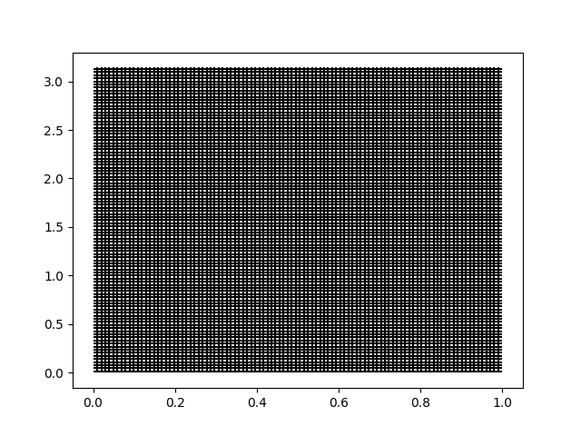
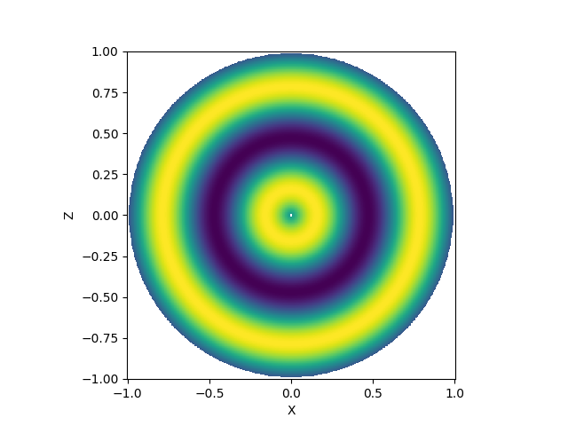

Note
Go to the end to download the full example code.
Building Fields#
This basic tutorial will show how to make fields of different sorts in pymetric.
Fields (e.g. DenseField or DenseTensorField) are the core class of
pymetric. They are effectively array objects with some knowledge of their underlying geometry and, therefore, are able
to perform operations like the divergence, curl, or gradient. In this tutorial, we’ll walk through the basic process
of creating a field and taking its gradient in a spherical coordinate system.
Step 1: Coordinate Systems#
The first step in almost all pymetric workflows is to generate a coordinate system for the problem. In this case,
we’ll be using the spherical coordinate system (SphericalCoordinateSystem).
# Import pymetric and other relevant packages.
import matplotlib.pyplot as plt
import numpy as np
import pymetric as pm
# Create the spherical coordinate system
# object.
coord_sys = pm.SphericalCoordinateSystem()
Step 2: Building the Grid#
Once you’ve got the coordinate system, the next step is to build a grid. In many cases, the easiest way to
do so is to use the GenericGrid, which requires a coordinate system and a set of
arrays specifying the coordinates.
In this case, we’ll build a cell-centered grid in spherical coordinates:
# Build the radial points and
# the angular points.
radii = np.linspace(0.01, 0.99, 100)
# Build the angular points. We'll use 0 -> 2pi and
# 0 -> pi and then take the cell centers from those
theta, phi = np.linspace(0, np.pi, 100), np.linspace(0, 2 * np.pi, 100)
theta = 0.5 * (theta[1:] + theta[:-1])
phi = 0.5 * (phi[1:] + phi[:-1])
# Create a bounding box.
bbox = [[0, 0, 0], [1, np.pi, 2 * np.pi]]
# Create the grid.
grid = pm.GenericGrid(coord_sys, [radii, theta, phi], bbox=bbox, center="cell")
Using the grid, we can visualize the rectilinear grid:f
grid.plot_grid_lines(grid_axes=["r", "theta"])
plt.show()

Step 3: Building a Field#
Once the grid has been build, we can construct a field with ease. In this case, we’ll use one of the many options to make a field: via a function.
# Create the function.
func = lambda r: np.sin(10 * r)
# create the field.
field = pm.DenseTensorField.from_function(func, grid, ["r"])
A nice thing to do with the field is to look at its projection in the x-z plane. To do this, we’ll create a grid of points and convert them to spherical coordinates. We can then interpolate over the field to build the image.
x, z = np.linspace(-1, 1, 500), np.linspace(-1, 1, 500)
X, Z = np.meshgrid(x, z)
# Convert the coordinates.
R, THETA, _ = coord_sys.from_cartesian(X, 0, Z)
# Create an interpolation of the field.
interp = field.grid.construct_domain_interpolator(
field[...], ["r"], method="cubic", bounds_error=None
)
IM = interp(R.ravel()).reshape(R.shape)
# sphinx_gallery_thumbnail_number = 2
plt.pcolormesh(X, Z, IM)
plt.gca().set_aspect("equal")
plt.xlabel("X")
plt.ylabel("Z")
plt.show()

Total running time of the script: (0 minutes 0.342 seconds)